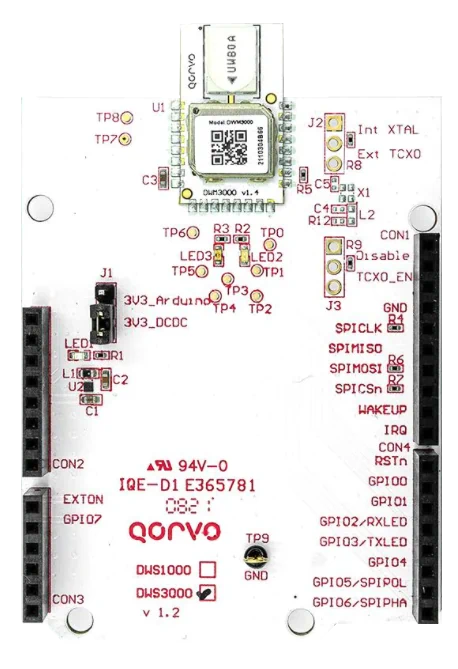

스마트헤드폰 · UWB 하드웨어
DWM3000EVB
기존 헤드폰의 UWB 자리에서 거리를 재는 구성
평가할 때는 실드와 외부 MCU를 결합한다. 이어컵에 옮기는 부품은 실드 위의 23 × 13 × 2.9 mm DWM3000이다.


구성 부품과 역할
실장 모듈
DWM3000
DW3110과 세라믹 UWB 안테나가 한 모듈에 들어 있다. 단일 안테나로 송수신 시각을 측정한다.
평가 실드 1장
DWM3000EVB
Arduino 헤더가 SPI·IRQ·리셋 신호를 꺼내 준다. 3.3 V 변환기와 전원 선택 점퍼로 평가 전원 공급과 소비전류 측정이 가능하다.
별도 준비
호스트 MCU와 상대 노드
nRF52840 DK 같은 호스트가 측정 순서를 실행한다. 상대 노드가 응답해야 두 장치 사이의 거리를 얻는다.
측정값이 만들어지는 과정
- 외부 MCU가 SPI로 송신 예약
- DW3110과 상대 노드가 프레임 교환
- 왕복 시간으로 거리 계산
헤드폰에는 기존 ATmega328P와 U4 BMI270을 활용한다. DWM1000과 패드 외형은 호환되지만 전원 핀과 드라이버를 확인해야 한다. 단일 실드에서 태그의 도래각은 얻을 수 없다.
프로젝트에서 확인할 항목
실드에서 거리 로그를 확보한 뒤 AVR로 이식한다. 기존 앵커와 채널 5·프레임·응답 지연을 맞춰 시험한다. iOS는 Nordic 호스트와 호환 NI 펌웨어 조합이 필요하며 Android의 기존 AVR용 완성 앱은 미확인이다.